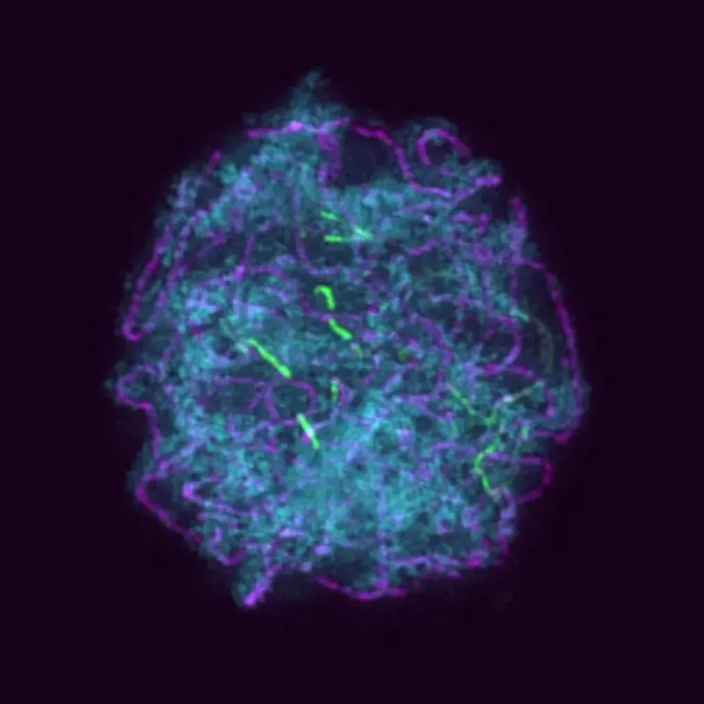
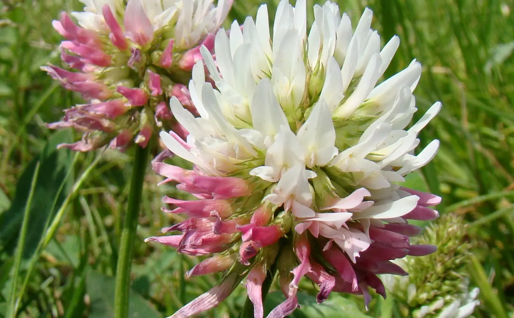
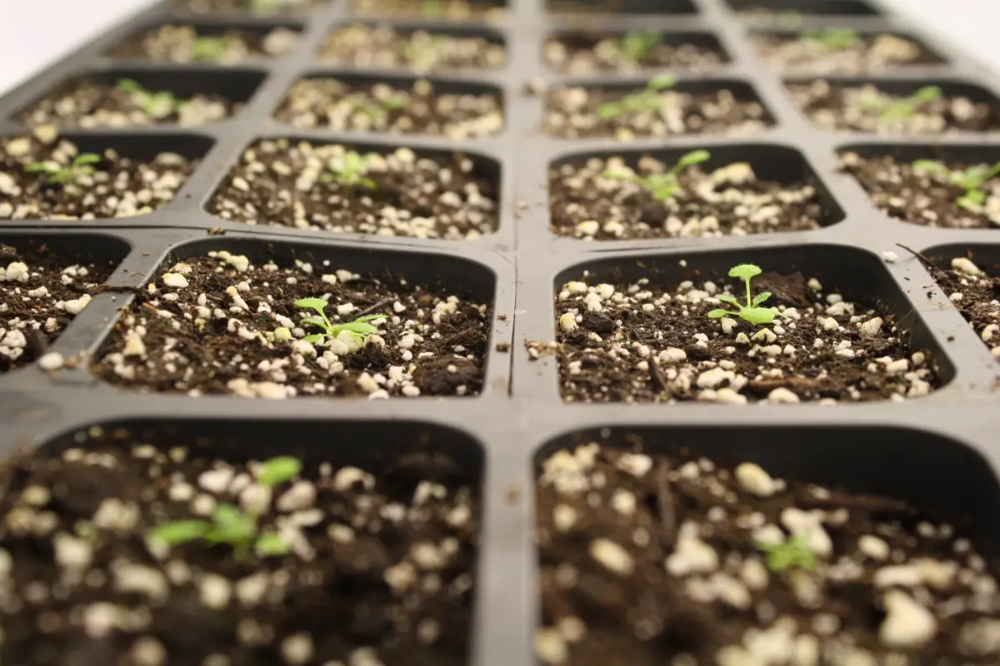
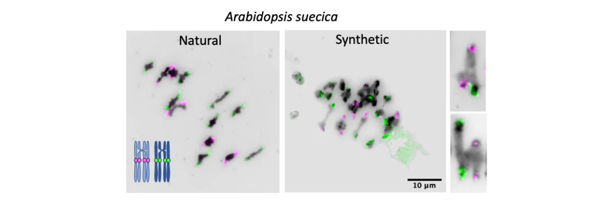
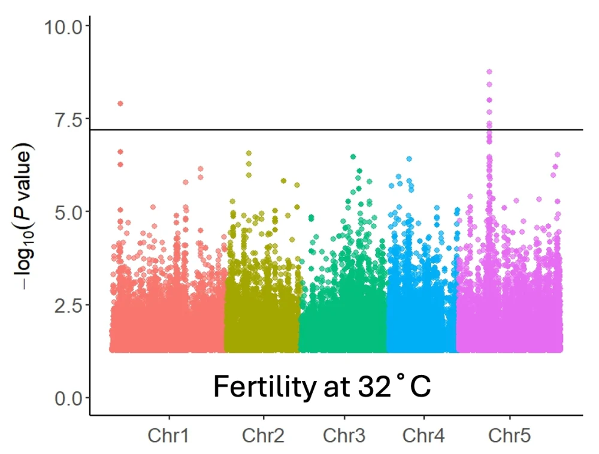
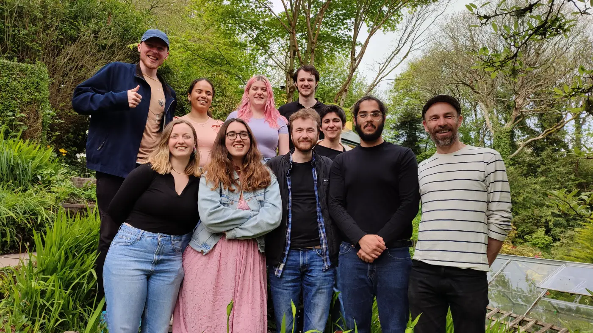

Watch: our new project launching in December
Check out this video to see me talking about our new project, which launches in December.
We study meiosis, polyploidy, DNA repair and gene editing: the processes that create new DNA sequences and new combinations of them, the raw material for evolution and for plant breeding. Much of our work aims to speed up crop improvement.
Dr Andrew LloydGroup Leader · IBERS, Aberystwyth University
Check out this video to see me talking about our new project, which launches in December.
Great to be awarded a new DEFRA Farming Innovation Programme grant in partnership with Germinal to develop drought-resilient clover. The project draws on our expertise in polyploidy, genome stability and marker-assisted selection. Total project award: £420K.
The UK dairy sector faces significant challenges adapting to climate change, with frequent periods of water deficit and severe droughts, occurring in four of the last eight years. These affect farms' ability to maintain productivity while modifying agronomic practices to meet net-zero emissions.
English dairy farms rely on grasslands for grazing and silage production, but traditional grassland species need high inputs of nitrogen fertiliser, which is environmentally unsustainable, costly and reliant on fragile supply chains. This is mitigated by incorporating clover into leys, which provides nitrogen through biological nitrogen fixation and increases productivity (liveweight gain, milk yield). However, the most widely used species, white clover (Trifolium repens), is susceptible to drought, with long recovery times during which its nitrogen fixation rates are minimal, requiring application of mineral nitrogen.
Selection for drought-tolerant white clover has been unsuccessful. However, hybridisation of white clover with the related species Caucasian clover (T. ambiguum) improves drought tolerance and recovery after drought. To date, one commercial cultivar has been introduced, a small-leaved variety only suited to sheep grazing.
This approach cannot be replicated, as it required a rare spontaneous chromosome doubling event in addition to the technically difficult interspecific hybridisation. Nor can the cultivar be used as a starting point for new varieties: without a means to reselect the full Caucasian clover chromosome complement, backcrossing progressively erodes this contribution, yielding unstable aneuploid progeny. Consequently, crossing the existing cultivar with larger-leafed types does not produce the reliably drought-tolerant varieties required for resilient dairy systems.
To overcome these technical challenges, we will assess the feasibility of two approaches to generate stable allohexaploid hybrids carrying a full diploid Caucasian clover subgenome: an innovative high-throughput screening pipeline combining chromosome-specific molecular markers with genome-size estimation (WP1), and a novel crossing and ploidy-doubling scheme (WP2). Both approaches, if successful, will support the development of large-leaved varieties that are as competitive and productive as conventional types under normal conditions, reliably drought tolerant, and free of inbreeding depression.
Combining the genomics and genetics expertise of Aberystwyth University with the breeding experience of Openfolde, we will develop and test these approaches and identify their relative strengths and weaknesses. This will establish the further research and development needed to integrate the methods into breeding programmes, creating a pathway to a new generation of clover varieties that will let UK grassland farmers build productive, resilient food systems.
Very excited to announce that we've been awarded a BBSRC Responsive Mode grant, Understanding Partner Choice and Crossover Control Between Divergent Chromosomes. £750K awarded.
During reproduction, plants exchange genetic material through a process called meiotic recombination, which generates new combinations of traits in each generation. The broad outlines of this process are well understood. However, two fundamental questions remain unanswered. First, how do chromosomes recognise each other as legitimate partners for recombination? Second, what levels of genomic divergence, whether at the sequence, structural or epigenomic level, act as barriers that prevent successful exchange?
These knowledge gaps are critical because they determine both the limits of natural evolution and the efficiency of plant breeding. In natural populations, these rules of recognition shape the boundaries between species, influence whether hybrids are viable, and govern the potential for adaptation through gene flow. In agriculture they are just as important: when breeders transfer useful traits such as drought tolerance, pest resistance or nutritional quality from wild relatives into crops, recombination between divergent genomes determines whether those traits can be integrated successfully. The same principles underpin efforts to design new allopolyploid crops, which combine chromosome sets from different species.
Our project will deliver three major outcomes:
We will undertake this work in Arabidopsis suecica, a powerful model for studying meiosis in allopolyploid plants that we have recently established. This system, combined with unique tools developed in our laboratory, gives us an unprecedented ability to dissect the mechanisms that underlie the rules of recognition.
At the most fundamental level, the outcomes will deepen our understanding of the "rules of life" by showing how genomes identify compatible partners and how divergence constrains recombination. At the applied level, they will inform new approaches to precision breeding, helping breeders make more predictable use of wild relatives, overcome barriers to trait introgression, and explore the potential of novel allopolyploid crops.
The research aligns directly with BBSRC's long-term priorities: delivering resilient and climate-smart agriculture, harnessing plant and microbial sciences for sustainable food systems, and supporting the transition to net-zero agri-food systems. By revealing how chromosomes recognise and interact with one another, the project will illuminate fundamental biology and unlock practical tools to secure crop productivity and resilience.
We looked at meiosis in natural and first-generation synthetic Arabidopsis suecica. Read the paper.

Thousands of useful traits sit in the wild relatives of crops, locked behind reproductive barriers. We study those barriers, from recombination between related genomes to genome stability in new hybrids, so breeders can reach that diversity.

Optimising prime editing for efficient precision genome editing, and using nanoparticles to deliver small molecules and editing reagents through the plant cell wall without leaving a transgene behind.

Polyploids must segregate four sets of chromosomes. We compare how plants with doubled genomes from one species, or from two, keep meiosis on track.

Plant reproduction is acutely sensitive to heat. We have identified genes that help plants hold seed yield under heat stress.

We're a mix of cytologists, geneticists and a bioinformatician, working mostly with Arabidopsis and Brassica, with an eye on forage and allopolyploid crops. We work closely with breeders and collaborators across the UK and abroad.